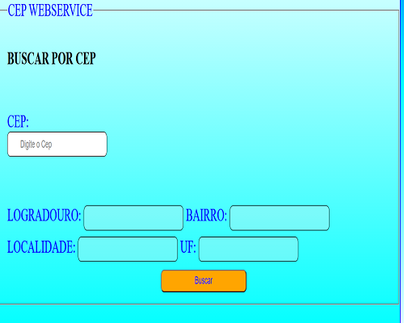
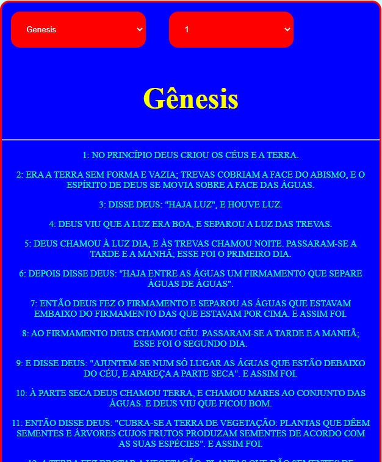

Portifolio de Aplicativos do Android Studio SDK, clique em uma imagem ou no titulo para acessar o github do projeto :)
Este é o Web Service de buscar o Cep e achar o endereço desejado, faça um teste!:)
Este é o Web Service da Biblia completa, selecione o livro e capitulo desejado! :)
** se parar de funcionar aguarde uns 5 minutos que a API estara funcionando Novamente
Cep WebService
Biblia WebService
